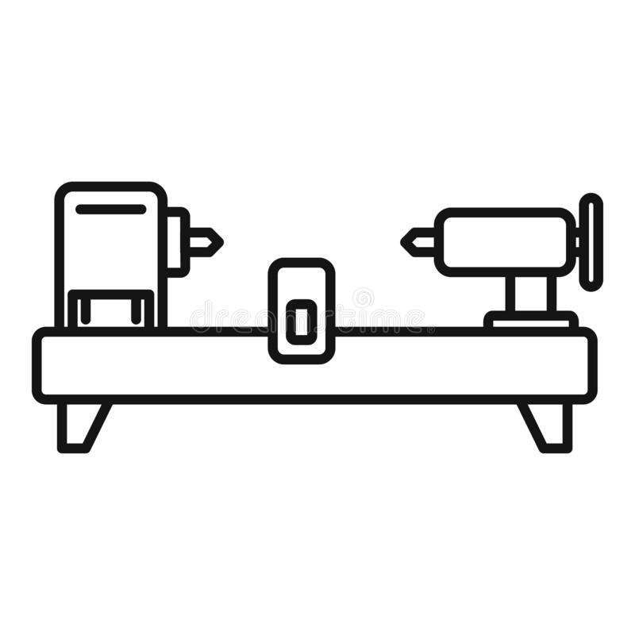

Arooz pneumatic angled seat valve

Due to the unavailability of this specific type of pneumatic valve in our country, my friend and I decided to invest in a start-up to address this gap. Our company's primary focus is on delivering high-quality and long-lasting products.
We designed our own body structure and created an aluminum mold for it. Each valve consists of four casted parts and a head formed by hydraulic pressing. The casting and CNC-machining processes are outsourced. All the components are assembled in our warehouse. Currently, we produce six different sizes ranging from DN15 to DN50.
Due to the unavailability of this specific type of pneumatic valve in our country, my friend and I decided to invest in a start-up to address this gap. Our company's primary focus is on delivering high-quality and long-lasting products.
We designed our own body structure and created an aluminum mold for it. Each valve consists of four casted parts and a head formed by hydraulic pressing. The casting and CNC-machining processes are outsourced. All the components are assembled in our warehouse. Currently, we produce six different sizes ranging from DN15 to DN50.
Project description
-

1.Design
Mechanical parts has been designed using Solidworks software. Each valve is assembled out of more than 30 diferent parts.
-

2.Laser cut
2 parts of the valves, are made out of 1.5mm stainless steel sheet which is cut by CNC laser cut.
-
3.Casting
There are 4 parts of the valves which are out of casted stainless steel. We are using investment casting system in order to provide the best surface quality and least machining need.
-
4.Pressing
Head of the valve is made from pressed stainless steel sheet which has been cut in previous steps. This operation is being done using 6 different mandrels for each size in a certain order.
-

5.CNC-Lathing
Casted parts and shafts and packings are made using CNC lathing machine due to its high accuracy and fast operation.
Parts
-
1.Y-body
The heaviest part of the valve which is out of casted stainless steel 316 alloy.
-

2.Pistone
It's made out of 1.5mm stainless steel sheet which has been pressed. Packing moves inside this pistone.
-
3.Seal
This part is combination of lathed casted stainless steel and a PTFE washer for sealing purpose.
-
4.Connector
Y-body and pistone, attached to each other through this connector which is also out of casted stainless. There are also 6 PTFE washers inside it for sealing purpose. Shaft moves inside this part to open and close the valve.
-
5.Packings
This alluminium lathed shaft is used to house the NBR packing. One side of the packing is loaded by spring, and the compressed air fills the other side and moves up the packing and shafts inside the pistone.
-
6.Brass nut
This part is used to prevent air leackage through the main shaft. There are 2 O-Ring and one silicone washer used inside.
-
7.Spring
Spring specifications has been chosen very accurately due to it's significant role in the valve and it's function.
-
8.Shaft
Stainless steel shaft which is connected to packing, seal and spring, moves up and down with constant distanse in order to close and open the valve.
Team mates
-
Behrooz Kanani
Business manager and financier and CEO of the company.
Also responsible for managing the workers and negotiating with suppliers and clients.
Gallery